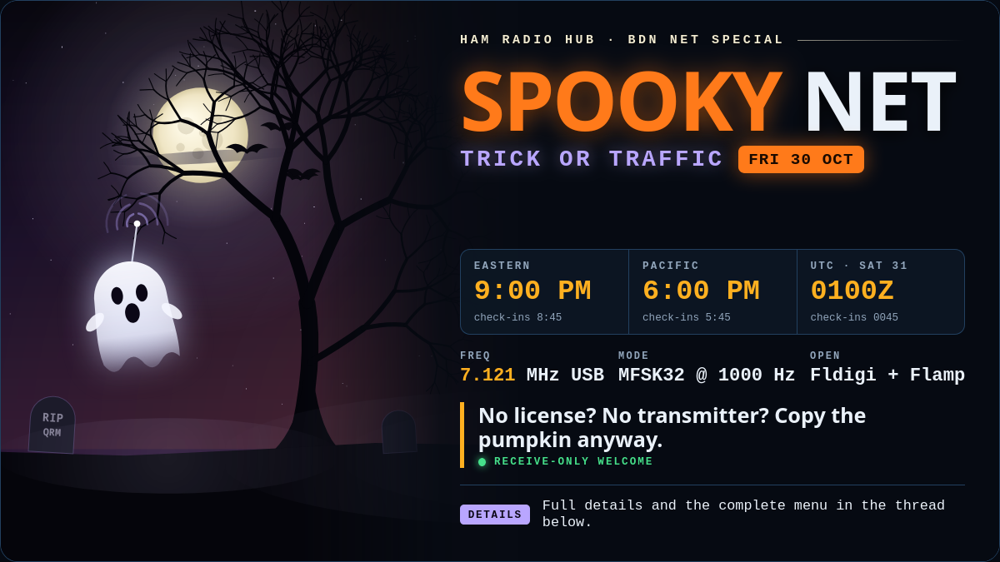

Spooky Net

When
| Zone | Check-ins open | Net starts |
|---|---|---|
| Eastern (EDT) | 8:45 PM | 9:00 PM |
| Pacific (PDT) | 5:45 PM | 6:00 PM |
| UTC · Sat 31 Oct | 0045Z | 0100Z |
Friday night, 30 October. In UTC that's already Saturday. Plan on about 75 minutes.
Where & how
No license? No transmitter?
Come anyway. Copy the pumpkin.
Everything on this net can be copied with a receiver, a computer, and free software. Here's how to follow along:
- Install Fldigi and Flamp (free, from W1HKJ). Both run on Windows, Mac, Linux and Raspberry Pi.
- Connect your receiver's audio to the computer. A cable to the sound card works, and so does a receiver with a built-in USB sound card. You can even use an SDR to copy.
- Tune to 7.121 MHz USB. In Fldigi, choose MFSK32, then click the waterfall at 1000 Hz.
- Turn RxID on (the RxID button in Fldigi). Fldigi will follow the net if it changes modes.
- Open Flamp. The Spooky Wire builds itself block by block. The pumpkin prize opens in Fldigi's picture window. Save it! You'll need it later to get into the Crypt.
Want to try it before Friday? The BDN Net meets on the same frequency every Friday at the same time.
For help, tips, and spooky tricks for getting any audio into Fldigi so it can decode, see Getting audio into Fldigi.
On the menu
Costume check-in
Optional, and fun to watch scroll up the screen. Check in like this:
CALL / CALL / NAME / COSTUME / STATE / CALL + TRICK or TREAT KC9MTP KC9MTP BILL FRANKENSTEIN IN KC9MTP TREAT
If costumes aren't your thing, a normal check-in is fine.
Spooky Wire
Tonight is just for fun, so instead of the usual bulletin the net sends the Spooky Wire. It goes out by Flamp like any Friday, and the relays carry it across the map. But errors are hiding in it. Copy it, read it, and find them. You'll turn in what you found on the scorecard after the net.
Trick or Traffic
Say TRICK or TREAT at check-in. When NCS reads back the check-ins, your call comes with a code that's yours alone. Take it to the Candy Bowl on this site and see what you got. A treat is a monster having a great night on the radio. A trick... well, let's hope your station survives. Gamble wisely.
Ghost Whisperer
"Summoning waves from the ether." The volunteer stations are lined up ahead of time. Each one steps down from 50 W to 10, 5, and 1 W, sending a short message from beyond at each step. Each station sends a unique word three times in a row at each power level. Write down every word you can copy. The more you grab, the more points you earn. And the more check-ins, the more ghosts will whisper.
Pumpkin Cert
Stay to the end, long enough to see the Great Pumpkin rise. The last thing sent tonight is a small MFSK picture. Save it: the key to the Crypt is in it, and the Crypt holds your certificate, with your call on it. Receive-only listeners can earn it too.
After the net
Beams of moonlight will illuminate the Crypt's location. Within it, you'll enter your Ghost Whisperer words, turn in the errors you found in the Spooky Wire, and speak the secret word of the Great Pumpkin to unlock your certificate.
The Spooky Wire answer key, the Ghost Whisperer results, and the winners come out the following week in the 6 Nov BDN bulletin. The top 10 get carved on the tombstone here for good.